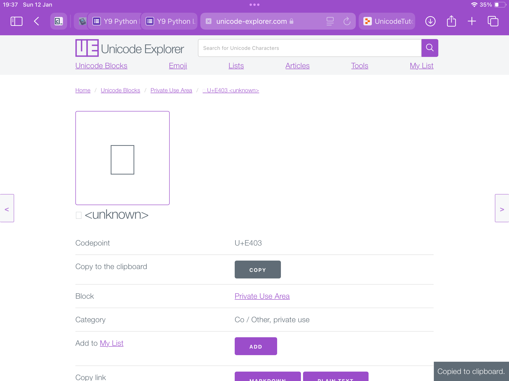
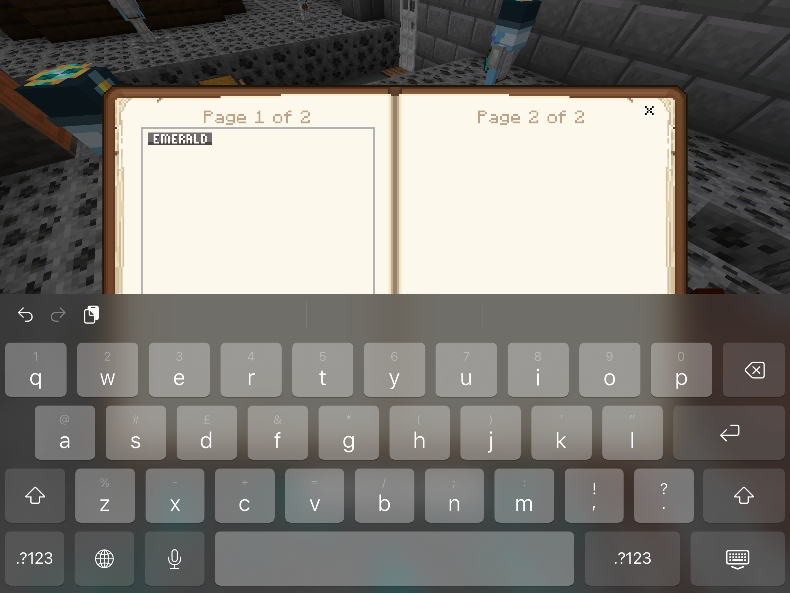
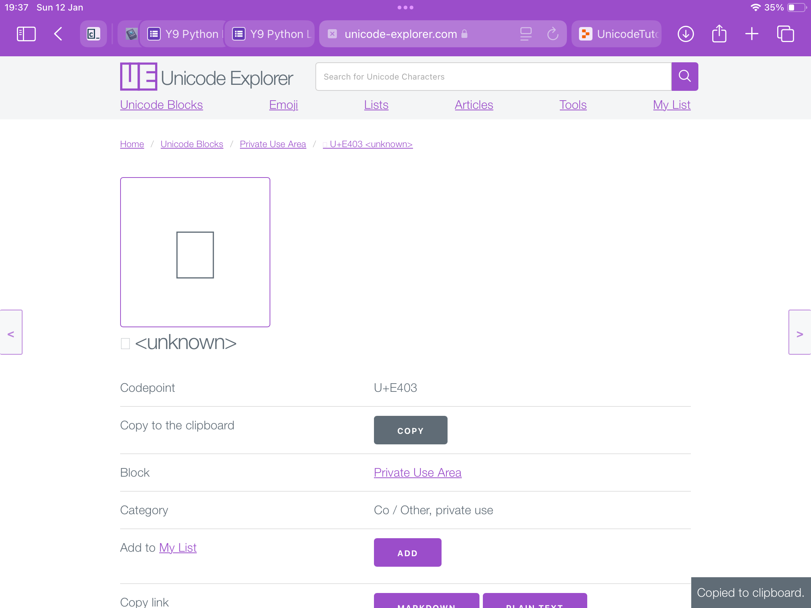
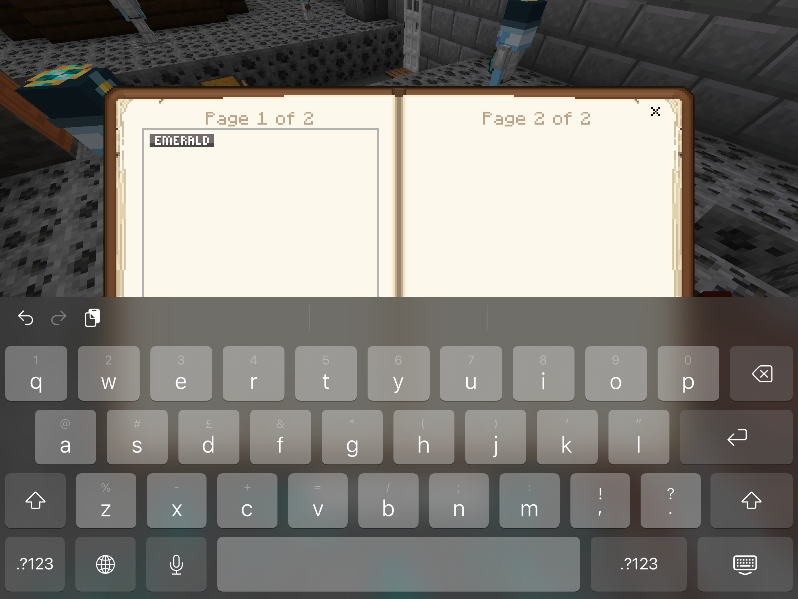

Many players have been asking how to get some of the custom emojis also known as Unicode or glyphs. He is an in-depth guide on how to obtain and use these awesome characters. Use this website as your atlas to find the Unicode.
Below is a chart of the current locations of the ingame Unicode. Once you have found the Unicode you would like to use, copy and paste it into your Book and Quill.
🙂 Unicode Between: E100-E1FF are emojis, statistic, and various glyphs.
📶 Unicode Between: E200-E2FF are health bars, mana bars, orange bars, purple bars and slayer experience bars.
🌳 Unicode Between: E300-E320 are zone icons on the scoreboard.
🌐 Unicode Between: E400-E4FF are English ranks, rarities, and item badges.
🇹🇷 Unicode Between: E500-E5FF are Turkish ranks, rarities, and item badges.
💚 Unicode Between: E600-E660 are yellow bars and green bars.
🩶 Unicode Between: E700-E730 are gray bars.
🇫🇷 Unicode Between: E800-E8FF are French ranks, rarities, and item badges.
🇩🇪 Unicode Between: E900-E9FF are German ranks, rarities, and item badges.
Irrelevantdev's (irrld) glyphs page (all glyphs in unicode)
Irrld's Glyph Click on a glyph to copy it's unicode code. Then paste it into your bookHow to use unicode-explorer
Unicode Explorer
- First open unicode explorer from the link, from here you will see alot of unicode values.
- You can scroll to find lots of unicode values, ranging from E000 to EFFF. Find a unicode value and click it
- From here you will find a few buttons. Click copy, it should say "Copied to clipboard"
- Open Minecraft and then join Craftersmc. In a book and quill (purchasable from the librarian) paste the unicode value that you copied

 



Notes:
Not all unicode values will work, E400-407 are the store ranks whereas E420-425 are staff ranks.
If you see nothing appear, you can try a different unicode value. That may work instead.
Pasting "E400" etc will NOT WORK. You MUST copy a UNICODE value using the website